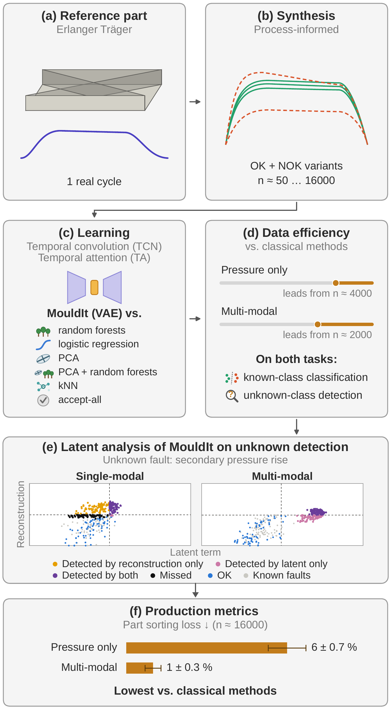
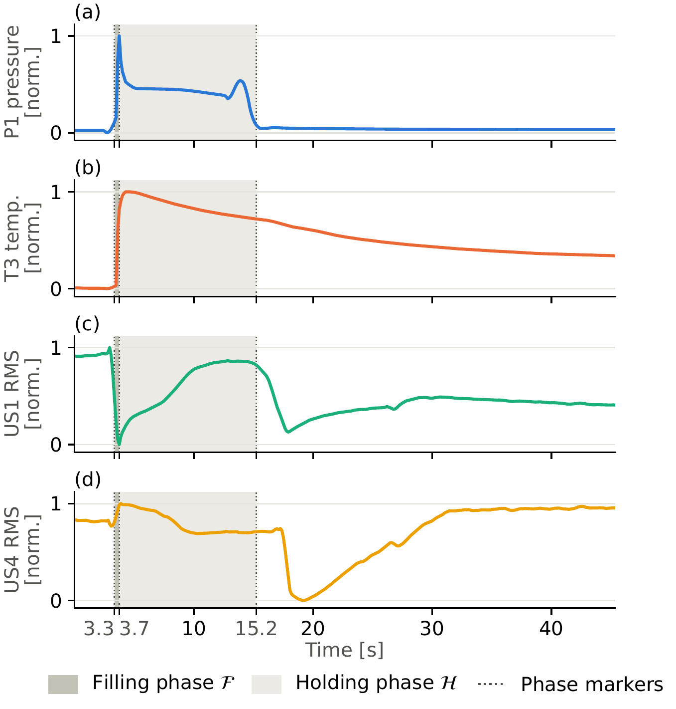
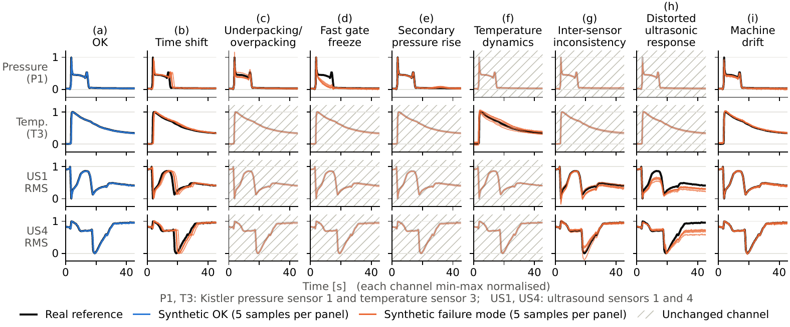
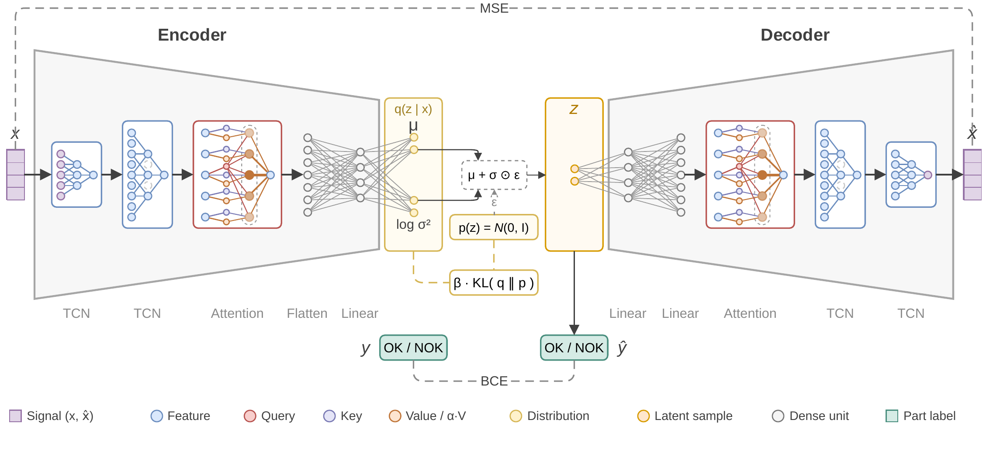
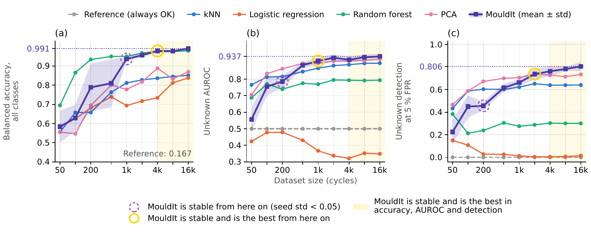
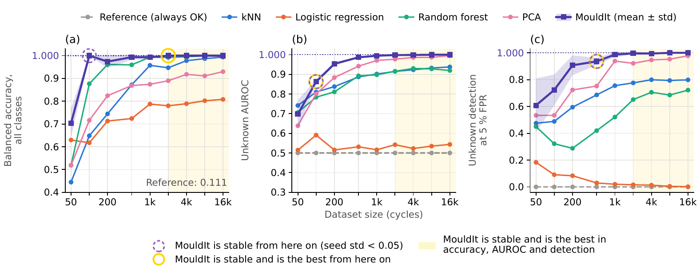
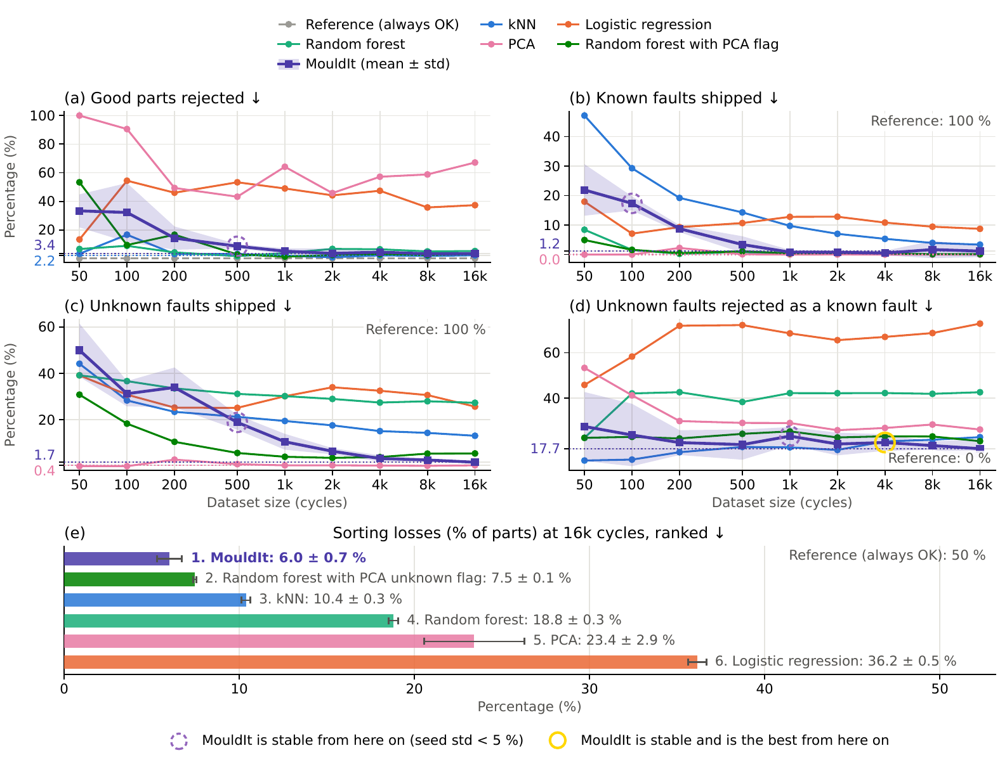
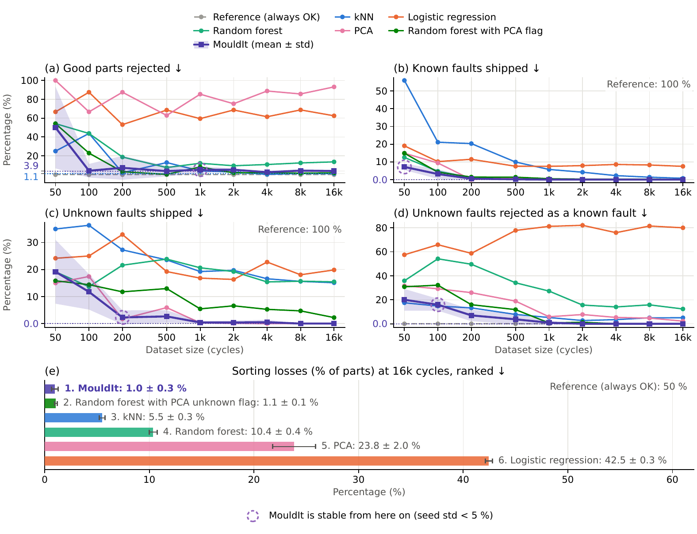
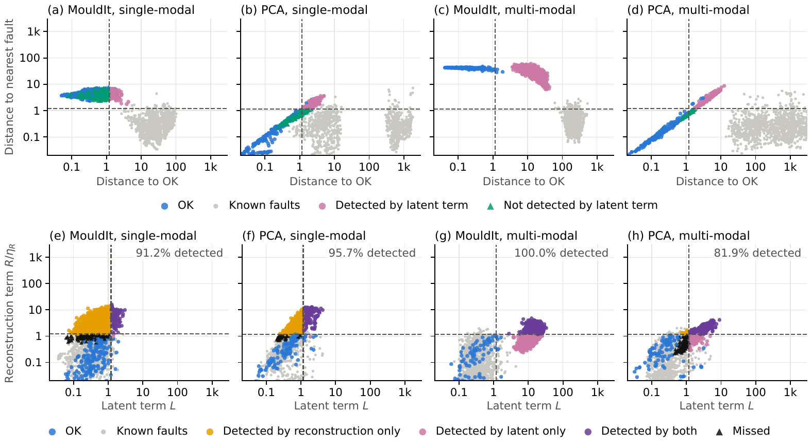

When does deep learning beat classical machine learning on temporal data?
From this dataset size, MouldIt is stable across seeds and the best method at classifying known faults and at detecting unknown ones. With less data, random forests with a PCA unknown flag sort parts better.
With the added sensors, MouldIt is stable across seeds and leads on both tasks from 2,000 cycles, and it has the lowest sorting loss at every size tested.
Pressure only and with all sensors. MouldIt ranks first against every baseline, including random forests with the PCA unknown flag (7.5 / 1.1 %).
One model for sorting moulded parts
Smart industrial solutions that address multiple tasks need models that understand the underlying process. We examine representation learning for the injection moulding process and ask how data-efficient it is, and how much additional sensors help, compared with classical machine learning.
From one real reference cycle of an Erlanger Träger part, we synthesise process-informed datasets of 50 to 16,000 cycles. MouldIt, a temporal convolution and attention based variational autoencoder, reconstructs the in-mould signals while it classifies each part as acceptable or as one of the synthetic failure modes. A novelty score from the same network flags faults that were never seen in training.
We compare MouldIt with k-nearest neighbours, logistic regression, random forests, PCA and an accept-all reference, all adapted to both tasks, in single-modal and multi-modal settings.
Questions the study answers
- From how much data is a learned representation stable across seeds and better than classical methods?
- Do additional sensors reduce that amount?
- Does it also make fewer sorting errors on production metrics?
- Does it generalise to failure modes it has never seen?

Process-informed synthetic data
Public injection moulding datasets with in-mould signals and many fault types do not exist yet. We start from the first cycle of the public FORinFPRO-HIMD dataset: cavity pressure, cavity temperature and two ultrasound channels, aligned on one grid of 340 steps over 45 s. Every synthetic cycle is a copy of it with benign OK variation (noise, gain, lead or lag, trend, smoothing). Faulty cycles also get one failure mode, placed relative to the fill start, pressure peak and holding end.

Failure modes
- all channelsTime shift. Events happen earlier or later.
- pressureUnder- or overpacking. Pressure scaled over filling and holding.
- pressureFast gate freeze. Pressure decays early in the holding phase.
- pressureSecondary pressure rise. A bump in the cooling phase.
- all channelsMachine drift. Lower holding pressure and added noise; with all sensors, the temperature curve is also shifted up.
- temperatureTemperature dynamics. Shifted melt temperature, faster or slower cooling.
- ultrasoundInter-sensor inconsistency. One sensor attenuated, the other amplified.
- ultrasoundDistorted ultrasonic response. Weaker dip and recovery, as when a gap forms.
The single-modal setting has 6 classes (OK and the first five modes, pressure only). The multi-modal setting has 9.

The MouldIt model
MouldIt is a variational autoencoder for time series. Two temporal convolution blocks capture local shape, and a temporal attention block relates events across the cycle. The encoder compresses each cycle into a 32-number latent summary. From it, linear heads predict the part class and a mirrored decoder rebuilds the signal.

MSE(x, x̂)Reconstruct
Rebuild the full signal from the latent summary.
β · KLD(q ‖ p)Regularise
Keep the latent distribution close to a standard normal prior; β follows from the OK noise level.
0.1 · BCE(y, ŷ)Classify
Predict OK or the failure mode, one head per class.
Flagging unknown faults
The trained network also gives a novelty score, with no extra model. The latent term is the distance to the nearest known class, in units of that class's 95 % boundary. The reconstruction term is the squared reconstruction error, in units of its 95 % level on known cycles. A cycle is flagged as unknown when the larger of the two passes a threshold set for a 5 % false positive rate.
Performance over dataset size
Every method is trained on nine dataset sizes from 50 to 16,000 cycles with three seeds. For unknown detection, each failure mode is held out once from training and added to the test set.


Sorting parts
A part ships only if it is predicted OK and not flagged as unknown. That decision can fail in four ways: good parts rejected, known faults shipped, unknown faults shipped, and unknown faults rejected as a known fault. The sorting loss is the mean of the four rates.


All metrics at 16,000 cycles
| Higher is better | Lower is better | |||||||
|---|---|---|---|---|---|---|---|---|
| Method | Balanced accuracy | Unknown AUROC | Unknown detection | Good parts rejected | Known faults shipped | Unknown faults shipped | Unknown rejected as known | Sorting loss |
| Single-modal · pressure · 6 classes | ||||||||
| MouldIt | 99.1 ± 0.5 | 0.937 ± 0.016 | 80.6 ± 4.2 | 3.4 ± 1.3 | 1.2 ± 2.0 | 1.7 ± 0.2 | 17.7 ± 4.2 | 6.0 ± 0.7 |
| RF + PCA flag | – | – | – | 3.2 ± 0.7 | 0.1 ± 0.1 | 5.5 ± 0.7 | 21.0 ± 0.4 | 7.5 ± 0.1 |
| kNN | 85.1 ± 0.1 | 0.897 ± 0.001 | 64.1 ± 0.6 | 2.2 ± 1.3 | 3.4 ± 0.2 | 13.1 ± 0.4 | 22.8 ± 0.2 | 10.4 ± 0.3 |
| Random forest | 97.9 ± 0.3 | 0.794 ± 0.011 | 30.1 ± 1.3 | 5.3 ± 0.3 | 0.0 ± 0.0 | 27.3 ± 2.0 | 42.6 ± 0.8 | 18.8 ± 0.3 |
| PCA | 87.0 ± 1.6 | 0.921 ± 0.004 | 73.5 ± 0.4 | 67.1 ± 11.1 | 0.0 ± 0.0 | 0.4 ± 0.3 | 26.2 ± 0.7 | 23.4 ± 2.9 |
| Logistic regression | 83.8 ± 0.9 | 0.348 ± 0.010 | 1.5 ± 0.4 | 37.3 ± 2.2 | 8.7 ± 0.2 | 25.7 ± 4.5 | 72.9 ± 4.1 | 36.2 ± 0.5 |
| Reference (always OK) | 16.7 ± 0.0 | 0.500 ± 0.000 | 0.0 ± 0.0 | 0.0 ± 0.0 | 100.0 ± 0.0 | 100.0 ± 0.0 | 0.0 ± 0.0 | 50.0 ± 0.0 |
| Multi-modal · pressure, temperature, two ultrasound · 9 classes | ||||||||
| MouldIt | 100.0 ± 0.0 | 1.000 ± 0.000 | 100.0 ± 0.0 | 3.9 ± 1.2 | 0.0 ± 0.0 | 0.0 ± 0.0 | 0.0 ± 0.0 | 1.0 ± 0.3 |
| RF + PCA flag | – | – | – | 1.9 ± 0.4 | 0.1 ± 0.1 | 2.2 ± 0.2 | 0.0 ± 0.0 | 1.1 ± 0.1 |
| kNN | 99.4 ± 0.3 | 0.938 ± 0.002 | 79.9 ± 0.4 | 1.1 ± 0.7 | 0.7 ± 0.2 | 15.1 ± 0.2 | 5.0 ± 0.5 | 5.5 ± 0.3 |
| Random forest | 99.9 ± 0.1 | 0.920 ± 0.008 | 72.2 ± 1.1 | 13.6 ± 0.7 | 0.0 ± 0.0 | 15.5 ± 0.5 | 12.3 ± 0.6 | 10.4 ± 0.4 |
| PCA | 93.0 ± 4.8 | 0.995 ± 0.000 | 97.8 ± 0.2 | 93.2 ± 8.3 | 0.0 ± 0.0 | 0.0 ± 0.0 | 2.2 ± 0.2 | 23.8 ± 2.0 |
| Logistic regression | 80.8 ± 0.8 | 0.544 ± 0.057 | 0.1 ± 0.0 | 62.5 ± 2.2 | 7.5 ± 0.9 | 19.9 ± 4.9 | 80.0 ± 4.9 | 42.5 ± 0.3 |
| Reference (always OK) | 11.1 ± 0.0 | 0.500 ± 0.000 | 0.0 ± 0.0 | 0.0 ± 0.0 | 100.0 ± 0.0 | 100.0 ± 0.0 | 0.0 ± 0.0 | 50.0 ± 0.0 |
Percent, except AUROC; mean ± standard deviation over three seeds. Unknown metrics are averaged over the held-out failure modes; detection is at a 5 % false positive rate. RF + PCA flag has no classifier or score of its own, so it only has sorting errors. Bold marks the best method per column, excluding the reference.
How MouldIt detects unknown faults
We split the novelty score into its latent and reconstruction terms. MouldIt's latent space keeps OK cycles far from the known faults: the median distance of an OK cycle to its nearest fault is 10.1 boundary units with pressure only and 25.3 with all sensors, against 0.17 and 0.15 for PCA. PCA follows the largest variance rather than the classes, so 96 % of OK cycles fall inside a fault boundary and it rejects most good parts.
With more data, unknown faults move out of the known classes in the latent space. With little data, MouldIt relies more on reconstruction error.

Limits
- All cycles but one are synthetic, from one part and one material; the defect sizes are modelling choices.
- About 5 % false alarms is high for production.
- Before deployment, validate on real defects and set the alarm threshold by weighing a shipped faulty part against a rejected good one.
Citation
@misc{ayad2026mouldit,
author = {Ayad, Abdullah},
title = {{MouldIt}: Data Efficiency of Multi-Task Temporal Representation Learning in Injection Moulding},
year = {2026},
eprint = {2611.13646},
archivePrefix = {arXiv},
primaryClass = {cs.LG},
url = {https://arxiv.org/abs/2611.13646}
}
If you use the data, please also cite the dataset:
@misc{kini2026dataset,
author = {Kini, Rohan and Schweizer, Lukas},
title = {{FORinFPRO-HIMD}: Multimodal Sensor Dataset for Hybrid Injection Molding of Continuous
Fiber-Reinforced Polypropylene Composites},
howpublished = {Zenodo},
year = {2026},
doi = {10.5281/zenodo.20744054}
}